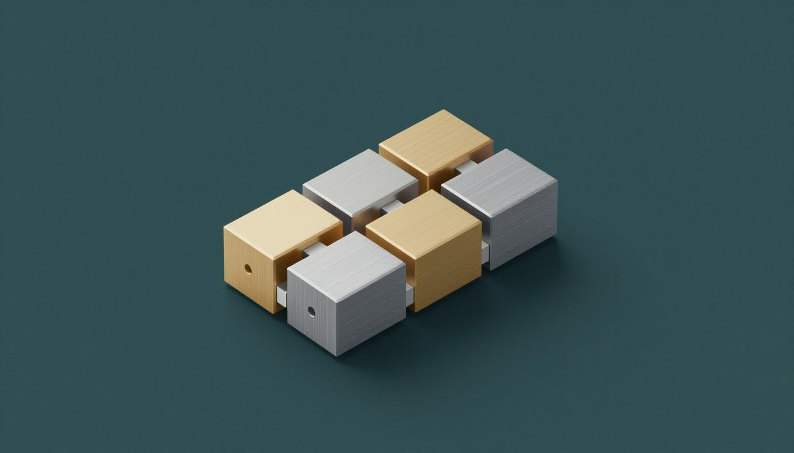

الجزء الأول خلص أول أكتوبر. H_AI كان بيعرف يعمل chat، ويشوف، ويرسم، ويسمع، ويتكلم، وكان بيحتفظ بكل محادثة في notes vault على الـ Mac بتاعي. الهدف كان جملة واحدة: مساعد AI محلي كويس كفاية إنه يستبدل أدوات الـ AI الخارجية اللي بدفعلها فلوس وببعتلها بياناتي.
الهدف ما اتغيّرش. اللي اتغيّر هو أنا بطلب منه إيه. في أكتوبر بطّلت أفتحه عشان أسأل أسئلة وبس، وبقيت أستخدمه أخلّص بيه شغلانات صغيرة في البيت. وده كان محتاج أدوات جديدة، وشخص تاني، وطريقة أحسن أضيف بيها أدوات من غير ما ألمس المحرك كل مرة.
الشهر باختصار
حاجات بطلبها منه دلوقتي
أحسن طريقة أوري بيها التغيير هي الأمثلة. دي نوعية الطلبات اللي بطلبها في أي أسبوع عادي. الكلام نفسه متألّف للصفحة دي؛ إنما الأدوات اللي وراه حقيقية.
إيصال، من صورة
[صورة إيصال من محل]ببعت الصورة في الـ chat، من الـ web app أو من موبايلي. router صغير وسريع بيعرف إنها إيصال مش سؤال، ويبعتها على طول للـ shopping tracker بتاعي، وده app صغير تاني على نفس الـ Mac. OCR model محلي بيقرا الحاجات وأسعارها. مفيش حاجة بتتحفظ غير لما أأكد، ولو نفس الإيصال اتبعت مرتين بيتمسك ويترفض.
صرفنا كام على البقالة الشهر ده؟ والبيض غلي؟بعد أسابيع الإيصالات بتتحول لإجابات. الـ model بيسأل الـ tracker بأدوات زي shopping_summary وshopping_price_history، وبيرد من الأرقام اللي بترجعله، مش من ذاكرته.
calendar العيلة
شوفلنا ساعة فاضية يوم الخميس بالليل. ضيف ميعاد دكتور سنان يوم التلات الساعة 3.الـ calendar اللي عملته لينا ليه أدواته: calendar_free بتلاقي الأوقات الفاضية، وcalendar_add بتعمل الميعاد. القراية بتحصل على طول. إنما أي حاجة بتضيف ميعاد أو بتغيّره بتعرض كارت الأول، فيه بالظبط اللي هيتحفظ، وتستنى دوسة مني.
البيت الذكي
إيه الأجهزة اللي online؟ اقفل التلفزيون.فيه app للبيت الذكي على الـ Mac عارف التلفزيون، والـ Raspberry Pi اللي مشغّل شاشة الـ calendar، وشوية أجهزة SwitchBot. الـ model يقدر يعرضهم ويطلب إن جهاز منهم يعمل حاجة. الحاجات اللي فيها خطورة لازم بني آدم حقيقي يوافق عليها: الـ API key لوحده مش كفاية. الجزء ده لسه بخلّصه.
مستند طويل
[PDF من 40 صفحة] إيه القرارات التلاتة اللي فيه؟ملفات PDF وWord وPowerPoint وExcel وEPUB بتتقري على الـ Mac. الـ scans بتعدّي على OCR model صغير اسمه GLM‑OCR؛ والصفحات العربي بتروح للـ vision model، لأنه بيقرا عربي أحسن. والملف الطويل بيتلخّص الأول، عشان ييجي على قد ذاكرة الـ model. وده كمان لسه بخلّصه.
الـ Mac نفسه
الـ Mac عامل إيه؟أداة server_status بتقرا الذاكرة والـ CPU والـ GPU وأنهي خدمات AI شغالة، والرد بيرجع بكلام بسيط. وجنبها فيه لوحة System تقدر تفضّي ذاكرة أو تعيد تشغيل خدمة وقفت، ودي بتظهر ليّا أنا بس.
الـ coding sessions بتاعتي، من على الكنبة
[صفحة الـ Claude sessions، على موبايلي]بشغّل كذا Claude Code session على الـ Mac. صفحة في الـ Hub بتعرض كل واحدة — شغالة، مستنياك، خلصت — مع آخر سطور طلعت منها، وبتخليني أرد عليها. وصفحة تانية بتقرا الـ to‑do list بتاعة المشروع وتقدر تبدأ منها شغلانة.
شخص تاني في البيت
الجزء الأول كان بيقول «لشخص واحد». في أكتوبر مراتي بدأت تستخدمه هي كمان، غالباً من الـ chat app على موبايلها، اللي كتبت عنه في بكلّم الـ AI بتاعي على الموبايل. وده طلع شغل أكتر من أي أداة.
كل حساب دلوقتي ليه قايمة محادثات خاصة بيه. والـ model عارف هو بيكلّم مين. تغيير المشاريع، ووضع الـ coding agent، وأي حاجة ممكن تلمس الـ code، دول ليّا أنا بس. أما الـ notes vault المشترك، يبان لكل الحسابات ولا لأ؟ ده لسه سؤال مفتوح، مكتوب ومستني قرار.
آخر حتة هي الـ single sign‑on. الـ calendar والبيت الذكي والـ shopping tracker كان كل واحد فيهم ليه طريقة دخول لوحده. دلوقتي الـ AI app هو المكان الوحيد اللي فيه password، والـ apps التانية بتدخّلك عن طريقه. الـ code اتبنى واتراجع، ومستنيني أشغّله.
أدوات بتتركّب كـ plug-ins

مع آخر أكتوبر المحرك كان فيه أكتر من خمسين أداة، وكل واحدة متسجّلة في حوالي عشرة أماكن: أنهي أدوات بتشتغل من غير ما تستأذن، وأنهي بتكتب، وأنهي ينفع تشتغل جنب بعض، وأنهي موثوق فيها. إني أضيف أداة للـ calendar كان معناه أغيّر المحرك في الأماكن دي كلها، ولو نسيت مكان واحد يبقى security bug مستني يحصل.
فالخطة دلوقتي إني أطلّع الأدوات برّه المحرك. كل add-on — الـ calendar، والبيت الذكي، والـ shopping tracker — بييجي معاه ملف صغير بيوصف أدواته، والمحرك بيحمّله عن طريق طبقة plug-ins واحدة. الـ plug-in يقدر بس يطلب صلاحيات؛ الـ settings بتاعتي أنا هي اللي بتقرر ياخد إيه فعلاً.
الشغل ماشي على مراحل، وبعد كل مرحلة لازم كل حاجة تشتغل بالظبط زي الأول. أول خطوة سجّلت كل الأدوات في registry واحد، والقايمة اتقارنت بـ snapshot للسلوك القديم. التانية بنت الـ plug-in loader، ومفيش حاجة فيه متشغّلة. والـ calendar هو أول تجربة: سلوكه النهارده اتجمّد في test الأول، عشان النسخة الجديدة تتقارن بيه، إجابة بإجابة.
قاعدة واحدة للذاكرة
الـ Mac فيه 64 GB، وكل حاجة بتتقاسمهم. في ليلة، الـ voice server كان ماسك 48 GB وزق 9 GB على الـ swap، والجهاز كله بقى بيزحف. مفيش حاجة كانت عطلانة. كل جزء كان بس سايب الـ model بتاعه محمّل، يمكن يحتاجه.
دلوقتي فيه قاعدة واحدة، ومتطبّقة في مكان واحد: مفيش model بيبدأ غير لو ربع الذاكرة فاضي؛ والـ image models والـ voice models بتشتغل واحد واحد؛ وأي حاجة بتحمّل model بتفضّيه لما تخلص. كل call في المحرك بيعدّي على نفس البوابة، والـ scripts بتاعتي كمان. والبوابة نفسها اتعلّمت ما تبقاش سبب جديد للعطل: لو حصلها مشكلة، الرد في الـ chat بيكمّل عادي.
فشل شكله نجاح، تاني
درس الجزء الأول كان إن الفشل هنا بيقدّم نفسه على إنه نجاح. وأكتوبر طلّع حالات جديدة:
المحادثات الطويلة كانت بتضيّع أولها. المحرك كان بيقول للـ models المحلية تستخدم حوالي 32,000 token ذاكرة، وهو فاكر إنها أربع أضعاف كده. فالـ model كان بيرمي أول المحادثات الطويلة من غير ما يقول، ويرد عادي. دلوقتي المحرك بيسأل كل model بيستحمل قد إيه، وبيعدّ الـ tokens الحقيقية، وبيلخّص المحادثة قبل ما تفيض.
الـ vault كان بينسى أجزاء من المحادثة. بعد التلخيص، الحفظ اللي بعده كان بيكتب ملاحظة المحادثة من جديد من اللي فاضل، والجزء اللي اتلخّص كان بيضيع. دلوقتي الملاحظة بتتبني من المحادثة كلها، والملخص بيبان في المكان اللي حصل فيه.
قفل الموبايل كان بيسيب إجابة من غير سؤال. لو الموبايل اتقفل في نص الإجابة، الـ server كان بيحفظ الإجابة ومش بيحفظ السؤال. دلوقتي الـ app بيستحمل القفل، والـ server بيبعت heartbeat صغير وقت الأدوات اللي بتطوّل، عشان يبقى فيه فرق بين اتصال مات وأداة بطيئة.
«خلصت» ومفيش حاجة اتعملت. نسخة بدري من خطوات الإيصالات كانت ممكن تقول إن الإيصال اتحفظ وهو ما اتحفظش. دلوقتي بتقول بس اللي الـ tracker يأكده.
شغال من غير ما أفكر فيه
دلوقتي فيه حوالي 12 خدمة: المحرك، والـ models، والـ voice server، والـ search engine، والـ chat server والـ bridge بتاعه، والـ calendar، والبيت الذكي، والـ shopping tracker. أمر واحد بيشغّلهم ويوقّفهم ويتأكد منهم كلهم، وmacOS بيشغّلهم لوحده أول ما أعمل login. وفيه أيقونة في الـ menu bar بتوريني أنهي واحدة شغالة.
والشغل نفسه بيتتابع بنفس الطريقة. كل أداة وfeature ومهمة مفتوحة ليها سطر واحد في contract file واحد، فيه مين مسؤول عنها وحالتها إيه. وفيه Claude Code command بياخد السطر ويعدّيه على الفريق: Opus يخطط، وSonnet يبني، وOpus يراجع، وبعدين security check، وبعدين commit. ولما أطلب، فيه security audit كامل بيقرا المشروع كله؛ آخر واحد لقى تسع مشاكل، والتسعة اتصلحوا في نفس اليوم.
إزاي فاضل خاص
أجهزتي بس. كل حاجة شغالة على الـ Mac وبتتوصل عن طريق Tailscale. مفيش حاجة مفتوحة على الإنترنت.
الصور مش بتتكوّم. الصورة اللي بتتبعت في الـ chat بتروح لملف خاص عمره قصير، وبعدين للـ app اللي محتاجها. ومش بتتنسخ في الـ notes vault.
أقل تفاصيل ممكنة. الإيصالات بتحتفظ باسم المكان، مش بموقعه. والـ logs بتخبّي الأسرار قبل ما تتكتب.
الناس هي اللي بتوافق، مش الـ keys. الحاجات اللي فيها خطورة — في البيت، أو في الـ code، أو في اللينكات المشتركة — محتاجة حد يدوس موافقة. والـ key المسروق لوحده ما يقدرش يعملها.
اللي جاي
إني أخلّص نقل الأدوات للـ plug-ins: الـ calendar الأول، وبعدين البيت الذكي والـ shopping tracker. ملاحظات مشتريات كل أسبوع، الـ AI ينزّلها في الـ chat. بحث في كل محادثاتي القديمة، مش في الـ vault بس. إجابات بتفضل شغالة لما الموبايل يتقفل، وتكمّل من مكان ما وقفت. ونفس الشغل القديم: إني أقفل الفجوة بين الـ models المحلية وClaude، وألاقي الأماكن اللي بيفشل فيها من غير صوت.
لسه مفيش اشتراك للـ models المحلية، ولسه مفيش حاجة بتخرج من البيت إلا لو اخترت الـ cloud.
المحرك والـ add-ons بتاعته والمقال ده اتبنوا بـ Claude Code.